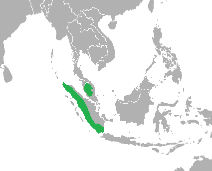
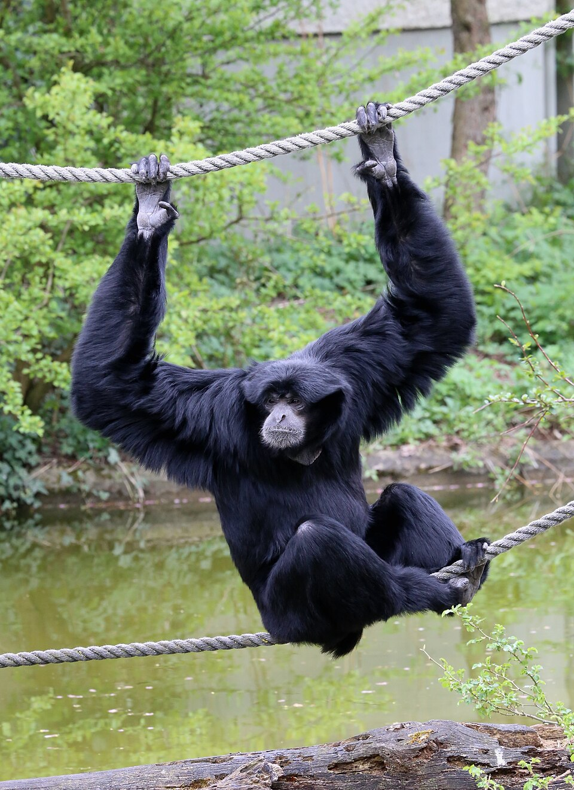
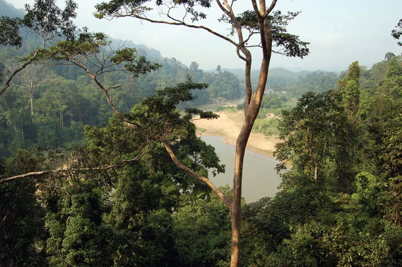

Physical Profile
Size Range
| Measurement | Male | Female |
|---|---|---|
| Head-body length | 75-90 cm | 71-88 cm |
| Body mass | 10-14 kg | 9-13 kg |
| Arm span | up to 150 cm | up to 140 cm |
| Tail | Absent | |
Identification Markings
- Coat Color — Entirely black; long, shaggy fur with no significant color difference between sexes
- Gular (Throat) Sac — A large, bare-skinned, expandable pouch on the ventral neck surface, present in both sexes. Inflates to the size of the animal's head during vocalization and turns reddish-pink when fully inflated.[2]
- Feet (Syndactyly) — The second and third toes are partially webbed, the defining anatomical feature of the genus Symphalangus and the source of the species name.
- Facial Region — Bare black skin surrounding the eyes and around the muzzle; dark brown eyes
- Limb Proportions — Forelimbs considerably longer than hindlimbs; adapted for brachiation (arm-swinging locomotion)
Habitat and Geography
Habitats
Siamangs occupy subtropical and tropical moist broadleaf forests, from sea-level lowland rainforest to montane forest at elevations up to approximately 3,800 m above sea level.[1] They require tall, continuous forest canopy with sufficient fruiting trees and are highly sensitive to habitat fragmentation.
- Lowland tropical rainforest (primary habitat)
- Submontane and montane moist broadleaf forest
- Riverine and swamp-margin forest
- Occasionally secondary forest directly adjacent to intact primary forest
Distribution
The siamang's range is restricted to three countries within the Sundaland biodiversity hotspot:[1]
- Sumatra, Indonesia: the largest remaining population; concentrated in Bukit Barisan Selatan and Gunung Leuser National Parks
- Peninsular Malaysia: found throughout interior hill forests, including Taman Negara National Park
- Southern Thailand: small remnant population near the Malaysian border in Hala-Bala Wildlife Sanctuary
Distribution Map

Fig. 1. Geographic distribution of Symphalangus syndactylus. Shaded areas indicate extant range across Sundaland. Source: IUCN Red List.[1]
Ecology and Behavior
Feeding and Diet
Siamangs are primarily frugivorous; figs (Ficus spp.) constitute the single most important food source.[2] Diet composition shifts seasonally in response to fruit availability, with leaf consumption increasing during periods of scarcity.
| Food Category | Proportion of Diet |
|---|---|
| Fruit (especially figs, Ficus spp.) | approximately 60% |
| Young leaves and leaf shoots | approximately 29% |
| Flowers and buds | approximately 7% |
| Invertebrates and small vertebrates | approximately 4% |
Behaviors and Adaptations
Siamangs are highly arboreal and rarely descend to the forest floor. Their primary mode of locomotion is brachiation, arm-swinging hand-over-hand through the forest canopy.[3]
- Territorial: family groups maintain and defend home ranges of 14-47 hectares
- Strictly diurnal (active only during daylight hours)
- Spend approximately 50% of active time resting in sitting or hanging postures
- Occasionally walk bipedally along large horizontal branches
- Social unit is a monogamous family group: mated adult pair and one to three offspring of varying ages
Communication
The siamang produces one of the loudest vocalizations of any land mammal relative to body size, audible up to 3-4 km through dense forest.[2] Mated pairs perform coordinated dawn duets that serve both territorial and pair-bonding functions.
- Gular Sac Function — Acts as a resonating chamber; inflated before and during call production to greatly amplify output volume
- Call Repertoire — Booms, barks, screams, and bitonal screams; females produce a distinct great call sequence structurally different from male calls
- Territorial Function — Dawn calls advertise territory occupancy and deter neighboring groups from encroaching on the home range
- Pair-Bond Function — Coordinated duetting is thought to reinforce the pair bond.[2]
Life History Cycle and Breeding Behaviors
Siamangs are monogamous, typically forming long-term pair bonds.[2] The reproductive cycle is among the slowest of any primate of comparable size.
- Pair formation: Subadults disperse from natal groups at 6-9 years and independently establish new territories
- Mating: Occurs year-round; no defined mating season has been documented
- Gestation: Approximately 230 days (about 7.5 months)
- Birth: Single offspring; twins are extremely rare; neonates are born helpless and cling to the mother's abdomen
- Year 1 infant care: Mother is primary caregiver; infant is carried continuously
- Year 2 infant care: The father takes on a significant carrying role as the infant becomes more independent[3]
- Weaning: Approximately 18-24 months of age
- Birth interval: 2-3 years between successive births
- Sexual maturity: 6-9 years of age
- Maximum longevity: approximately 40 years in captivity; estimated 25-30 years in the wild
Predators
Adult siamangs have few natural predators due to their large size and continuously arboreal lifestyle. Known predators include:[3]
- Clouded leopard (Neofelis nebulosa), the primary mammalian predator and an adept arboreal hunter
- Reticulated python (Malayopython reticulatus), an opportunistic ambush predator targeting juveniles or incapacitated adults
- Changeable hawk-eagle (Nisaetus cirrhatus), an aerial predator that predominantly threatens young individuals
- Sumatran tiger (Panthera tigris sumatrae), a rare ground-level encounter and not a significant predator
Media and Supporting Visuals

Fig. 2. Adult siamang (Symphalangus syndactylus) at Tierpark Hellabrunn, München. The entirely black coat and robust build distinguish it from smaller gibbon species. Photo: Wikimedia Commons.

Fig. 3. Tropical lowland rainforest, Taman Negara National Park, Peninsular Malaysia, representative siamang habitat. Photo: Wikimedia Commons.
References
- Geissmann, T. and Nijman, V. (2008). Symphalangus syndactylus. IUCN Red List of Threatened Species 2008: e.T39779A10266519. IUCN, Gland, Switzerland. IUCN Red List
- Nowak, R. M. (1999). Walker's Mammals of the World, 6th ed., Vol. 1. Johns Hopkins University Press, Baltimore. Animal Diversity Web
- Gron, K. J. (2009). Primate Factsheets: Siamang (Symphalangus syndactylus) Taxonomy, Morphology, and Ecology. Primate Info Net, Wisconsin National Primate Research Center, University of Wisconsin-Madison. Primate Info Net